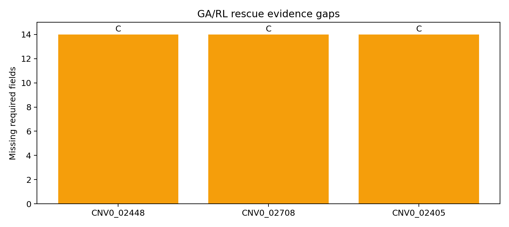

GA/RL Rescue Evidence
Missing metadata for the three recoverable watchlist candidates.

Summary
| evidence_grade | n_candidates | mean_missing | mean_priority | mean_source_prev | mean_hla_prev |
|---|---|---|---|---|---|
| C | 3 | 14.0 | 0.563031 | 0.451605 | 0.348348 |
Evidence queue
| candidate_id | peptide | hla_allele_4digit | source_name | label | ga_rl_barneo_priority_score | top_nn_similarity | source_positive_prevalence | hla_positive_prevalence | present_metadata_count | missing_metadata_count | present_metadata | missing_metadata | evidence_grade | evidence_action | evidence_boundary | rescue_note |
|---|---|---|---|---|---|---|---|---|---|---|---|---|---|---|---|---|
| CNV0_02448 | ILDKVLVHL | HLA-A*02:01 | ITSNdb_main | 1 | 0.620000 | 0.555556 | 0.648241 | 0.348348 | 0 | 14 | none | wt_peptide;gene;mutation_id;source_protein_window;expression_tpm;vaf;clonality;patient_id;disease_context;hla_loh;b2m_status;antigen_processing_status;tumor_stage;treatment_context | C | intake missing metadata before T1 promotion | research triage only; not clinical selection | High-GA watchlist candidate without exact/near/public overlap. |
| CNV0_02708 | ALDPLLLRI | HLA-A*02:01 | ITSNdb_Val | 1 | 0.605917 | 0.555556 | 0.058333 | 0.348348 | 0 | 14 | none | wt_peptide;gene;mutation_id;source_protein_window;expression_tpm;vaf;clonality;patient_id;disease_context;hla_loh;b2m_status;antigen_processing_status;tumor_stage;treatment_context | C | intake missing metadata before T1 promotion | research triage only; not clinical selection | High-GA watchlist candidate without exact/near/public overlap. |
| CNV0_02405 | KMIGNHLWV | HLA-A*02:01 | ITSNdb_main | 1 | 0.463175 | 0.400000 | 0.648241 | 0.348348 | 0 | 14 | none | wt_peptide;gene;mutation_id;source_protein_window;expression_tpm;vaf;clonality;patient_id;disease_context;hla_loh;b2m_status;antigen_processing_status;tumor_stage;treatment_context | C | intake missing metadata before T1 promotion | research triage only; not clinical selection | High-GA watchlist candidate without exact/near/public overlap. |
Source
/home/seungho/personal/THCA_data_analysis/project/results/clean_neobench_barneo_2026_05_09/ga_rl_rescue_evidence.tsv